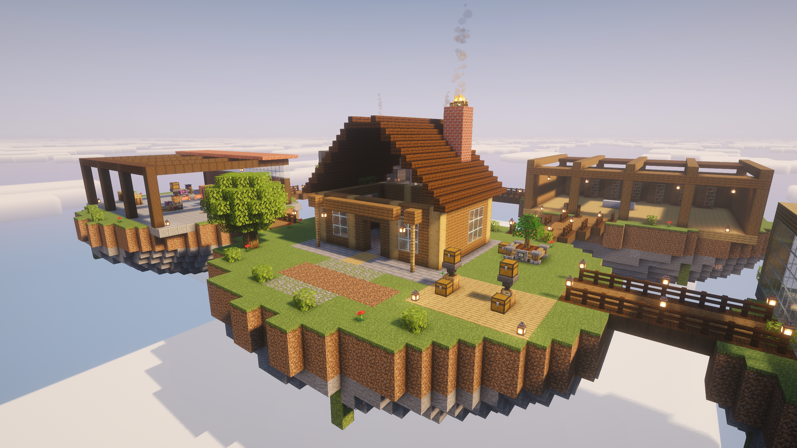
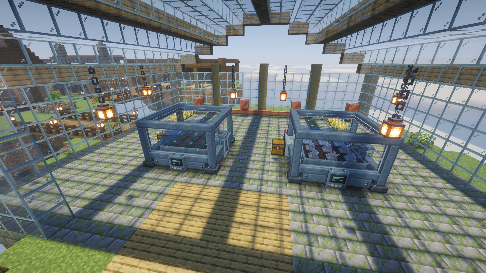
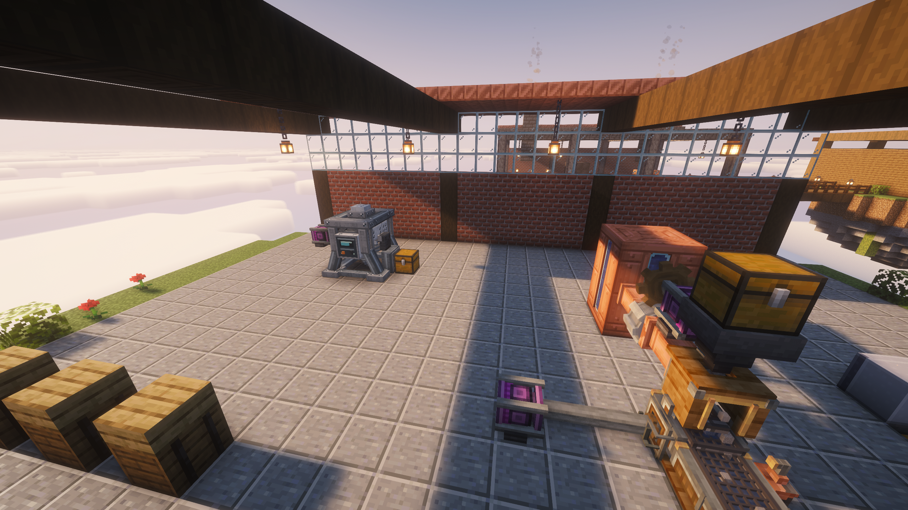
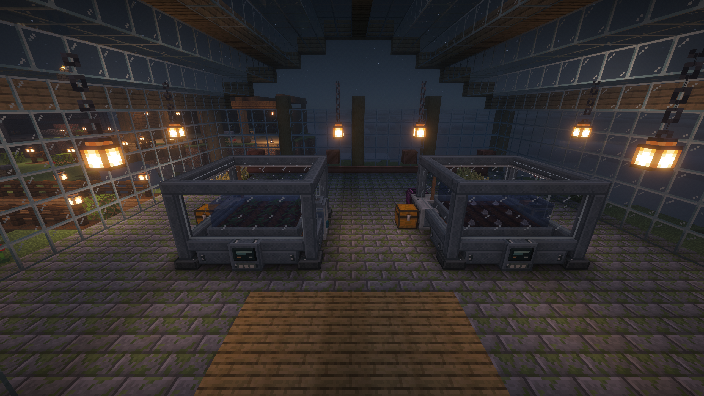
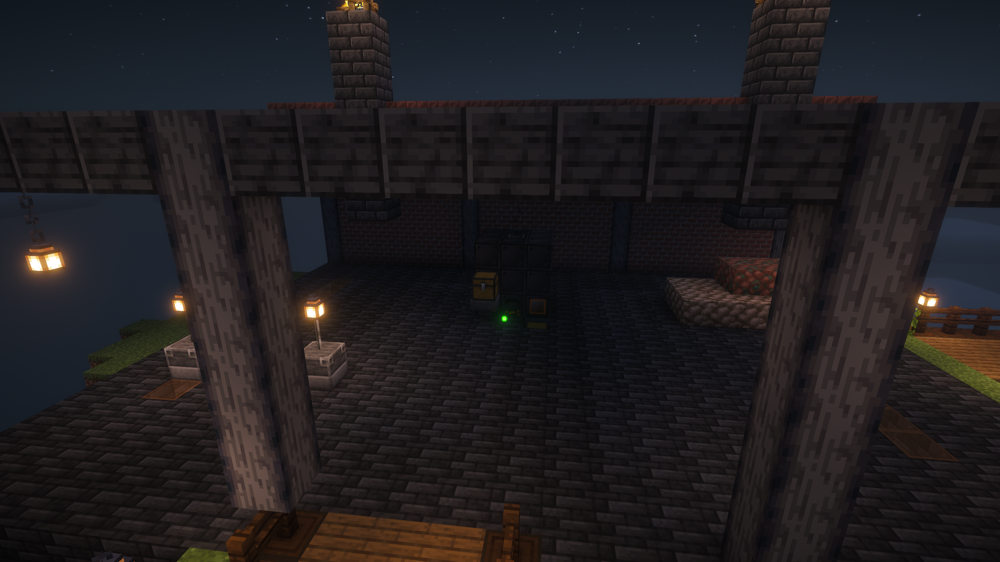
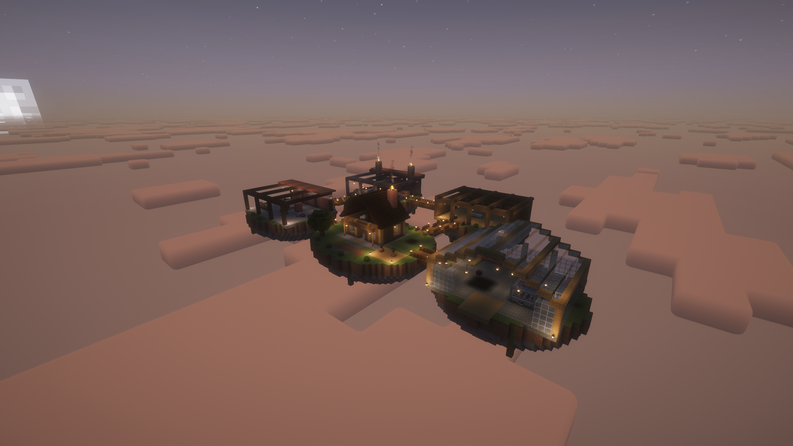

Rassers Revolution — Skybase
The First Island
Morning · 2560×1440

Glass and Growth
Day · 2560×1440

Copper Current
Golden hour · 2560×1440

Greenhouse After Dark
Night · 2560×1440

The Night Shift
Night · 2560×1440

Industry Above the Clouds
Blue hour · 2560×1440